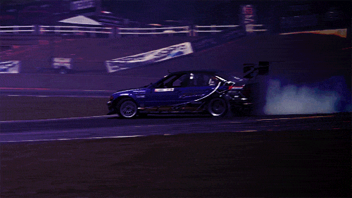

Історія Дрифтингу
Дрифтинг почався в Японії в 1970-х роках. Водії ганяли по гірським дорогам, змагаючись у керуванні автомобілями на високій швидкості, що згодом перетворилося на змагання з дрифту.
Легендарні Автомобілі
Одними з найпопулярніших автомобілів для дрифту були Nissan Silvia, Toyota AE86, та Mazda RX-7. Ці машини відомі своєю легкою конструкцією та потужними двигунами.

Знамениті Гонщики
Кейчи Цучія, відомий як "Батько дрифту", є одним з найвідоміших японських гонщиків, який зробив дрифтинг популярним у всьому світі.